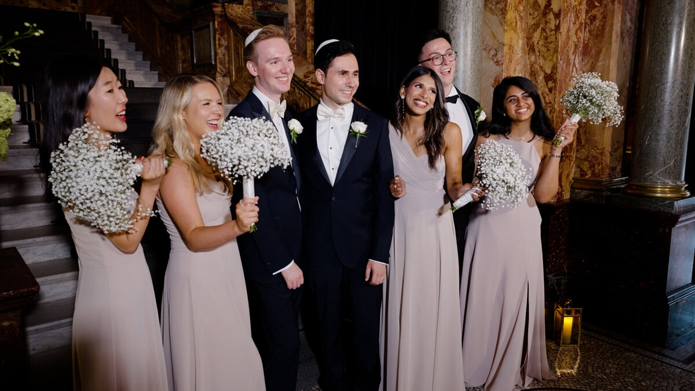

A well-structured timeline is the backbone of a successful wedding day. It ensures that everything runs smoothly, reduces stress, and allows for plenty of time to capture those all-important cinematic moments. Here's a look at how to structure your day for the best possible results.
Morning Preparations
Start your day with plenty of time for preparation. We recommend starting about 2-3 hours before your ceremony. This allows for a relaxed morning of getting ready, some detail shots, and those first looks with your parents or bridal party.

The Ceremony
The ceremony itself usually lasts between 30-60 minutes. We'll be there to capture every moment, from the walk down the aisle to the first kiss. After the ceremony, allow for some time for congratulations and maybe a confetti exit.
Drinks Reception
This is a great time for candid shots of your guests enjoying themselves. We usually recommend about 90 minutes for the drinks reception, which also gives us time for some group photos and your couple's portraits.
The Wedding Breakfast
The meal usually takes about 2 hours. We'll take this time to capture some detail shots of your reception room and set up for the speeches. We generally don't film during the meal itself, as people aren't usually at their most photogenic while eating!
The Speeches
Speeches are often the emotional heart of the wedding film. Whether they're before, during, or after the meal, we'll be there to capture every word and every reaction.
Evening Celebration
The party usually kicks off with the cake cutting and the first dance. After that, it's all about the dance floor! We love capturing the energy and the fun of the evening celebration.
Buffet and Farewell
If you're having an evening buffet or a formal send-off, we'll be there to capture it. It's a great way to round off your wedding film and show the end of a truly memorable day.